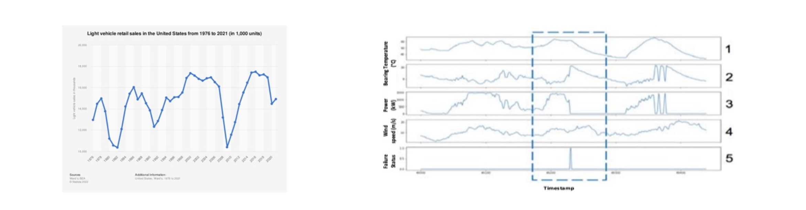
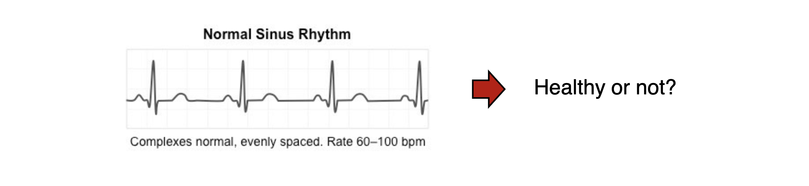
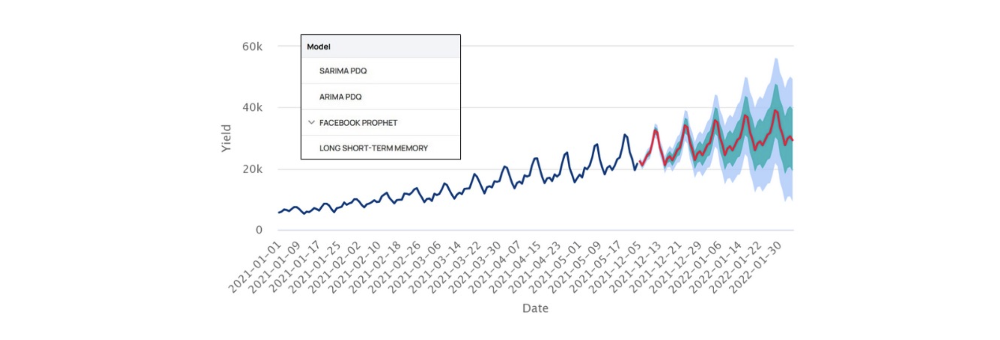
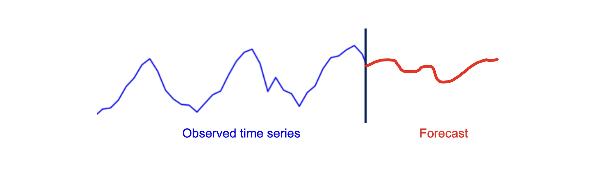
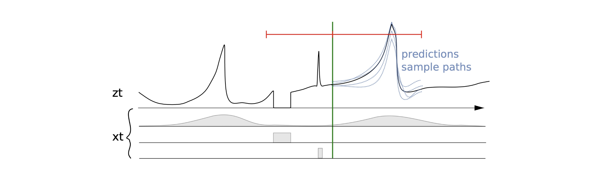
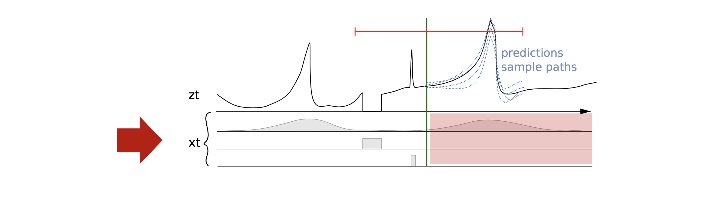
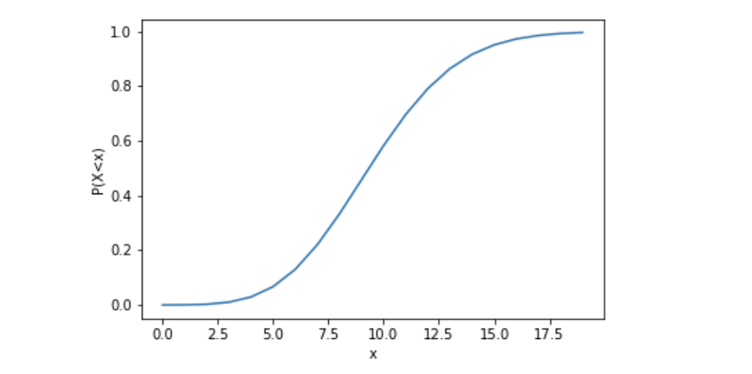

1. 시계열 데이터란 무엇인가? (Introduction to Time Series)
- 시계열 데이터는 우리 주변 어디에나 존재합니다. 시계열 데이터란 본질적으로 순차적인 데이터(Sequential data)를 의미하며, 그 형태와 특성은 매우 다양합니다. 데이터 마이닝과 머신러닝 관점에서 시계열 데이터는 다음과 같은 유연한 특성을 가집니다:
- 길이의 가변성: 고정된 길이(Fixed length)를 가질 수도 있고, 가변적인 길이(Variable length)를 가질 수도 있습니다.
- 타임스탬프의 유무: 명시적인 타임스탬프(Explicit timestamps)가 기록된 데이터일 수도 있고, 단순히 순서만 존재하는 데이터일 수도 있습니다.
- 변수의 수: 단변량(Univariate) 데이터뿐만 아니라, 여러 변수가 동시에 측정되는 다변량(Multivariate) 데이터도 포함합니다.
- 관측 주기: 규칙적인 주기(Regular observations)로 수집되기도 하지만, 불규칙적인 주기(Irregular observations)로 수집되는 경우도 흔합니다.

1.1. 시계열 분석의 범주 (Time Series Analysis Problems)
- 시계열 분석은 크게 데이터 전체의 패턴을 다루는 시계열 수준(Time series-level)의 문제와, 특정 시점의 값을 다루는 타임스탬프 수준(Timestamp-level)의 문제로 나눌 수 있습니다.
1) 시계열 수준의 문제 (Time series-level problems)
- 전체 시퀀스의 특성을 파악하여 분류나 군집을 수행하는 문제입니다.
- 시계열 분류 (Classification): 주어진 시계열 데이터가 어느 범주에 속하는지 판별합니다.
- 이상 탐지 (Anomaly detection): 전체 흐름 속에서 비정상적인 시계열 구간을 찾아냅니다.
- 시계열 군집화 (Clustering): 유사한 패턴을 가진 시계열 데이터들을 그룹화합니다.

2) 타임스탬프 수준의 문제 (Timestamp-level problems)
- 각 타임스탬프별로 미래를 예측하거나 특이점을 찾아내는 문제입니다.
- 시계열 예측 (Forecasting): 과거의 데이터를 바탕으로 미래 시점의 값을 예측합니다.
- 비정상 이벤트 탐지 (Abnormal event detection): 특정 시점에 발생한 이상 현상을 감지합니다.

2. 시계열 예측 문제 정의 (Forecasting Problem Setup)
- 본 포스트에서는 여러 시계열 문제 중에서도 실제 산업에서 가장 널리 쓰이며 깊은 이해를 요구하는 시계열 예측(Time Series Forecasting)에 집중합니다. 훌륭한 예측 모델을 구축할 수 있다면, 이를 응용하여 다른 시계열 문제들도 효과적으로 해결할 수 있습니다.

2.1. 수학적 문제 정의
시계열 예측 문제는 다음과 같이 수학적으로 정의할 수 있습니다. 특정 변수 \(i \in I\)가 있고, 현재 시점을 \(T\)라고 가정해 봅시다. 우리의 목표는 과거의 관측치들이 주어졌을 때, 미래의 대상 시계열(Target time series) \(Z_{i,t}\)의 거동을 예측하는 것입니다.
즉, 과거 데이터 \(Z_{i,0}, \dots, Z_{i,T-1}, Z_{i,T}\) 가 주어졌을 때, 미래 \(h\) 스텝의 결합 확률 분포를 추정하는 조건부 확률 모델을 구축하는 것입니다: \[P(z_{i,T+1}, z_{i,T+2}, \dots, z_{i,T+h} | Z_{i,0}, \dots, Z_{i,T})\]

2.2. Sequence를 예측하는 두 가지 접근법 (Predicting a Sequence)
- 미래의 \(h\)개 스텝 \(\hat{z}_{i,T+1}, \hat{z}_{i,T+2}, \dots, \hat{z}_{i,T+h}\) 을 예측하는 방식은 크게 두 가지로 나뉩니다.
- Approach 1: 자기회귀 방식 (Autoregressive Approach)
- 미래의 단일 스텝(예: \(Z_{i,T+1}\))만을 예측하는 함수 \(f\)를 학습합니다.
- 이렇게 예측된 값 \(\hat{Z}_{i,T+1}\)을 다시 입력으로 사용하여 다음 시점인 \(\hat{Z}_{i,T+2}\)를 예측하는 과정을 \(h\)번 반복합니다.
- Approach 2: 시퀀스 전체 예측 (Predict the sequence as a whole)
- 인코더(Encoder) \(f\)와 디코더(Decoder) \(g\) 구조를 사용하여 미래 시퀀스 전체를 한 번에 생성합니다.
- Approach 1: 자기회귀 방식 (Autoregressive Approach)
- 추가로, 실제 예측 환경에서는 목표 변수 \(z_{i,t}\) 외에도 요일, 환율, 주가지수 등과 같은 추가 속성(Additional attributes) \(x_{i,t}\)가 제공될 수 있습니다.

3. 예측의 불확실성과 최적 의사결정 (Uncertainty of Predictions)
머신러닝 모델을 통해 100% 완벽하게 정확한 예측을 수행하는 것은 현실적으로 불가능합니다. 따라서 시계열 예측의 궁극적인 목표는 단순히 미래의 값을 맞추는 것을 넘어, 예측된 결과를 바탕으로 최적의 의사결정(Optimal decisions)을 내리는 것입니다.
이러한 의사결정 과정은 미래 행동에 대한 확률 분포 \(p\)를 추정하고, 그 분포 위에서 발생하는 예상 비용(Cost)을 최소화하는 최적의 행동 \(y^*\)를 찾는 최적화 문제로 귀결됩니다: \[y^{*} = \text{argmin}_{y} \mathbb{E}_{z \sim \hat{p}(z)} [\text{cost}(y, z_{i,T+1}, \dots, z_{i,T+h})]\]
이 수식은 점 예측(Point Forecast)만으로는 합리적인 의사결정을 내릴 수 없으며, 불확실성을 내포한 확률적 예측(Probabilistic Forecast)이 필수적임을 의미합니다. 이를 명확히 보여주는 예시가 바로 ’Newsvendor Model’입니다.
4. 확률적 예측의 중요성: The Newsvendor Model
- 신문 가판대(Newsvendor)에서 신문 판매 수익을 극대화하는 장난감 문제(Toy problem)를 살펴봅시다.
4.1. 문제 정의 및 이윤 함수
- 다음을 관련 변수로 정의합니다:
- \(c\): 신문 1부당 매입 가격 (Purchase price)
- \(q\): 신문 주문 수량 (최적화해야 할 변수)
- \(s\): 신문 1부당 판매 가격 (Sales price)
- \(d\): 실제 수요 (Actual demand)
- 이때 가판대의 최종 이윤(Profit)은 다음과 같이 계산됩니다: \[\text{profit}(q) = s \cdot \min(d, q) - cq\]
- (실제 수요와 준비된 수량 중 작은 값만큼만 판매할 수 있으며, 준비한 모든 수량에 대해 매입 비용이 발생합니다.)
4.2. 점 예측(Point Forecast)의 한계
- 만약 우리가 미래 수요를 하나의 스칼라 값으로만 예측하는 모델 \(f\)를 사용한다고 가정해 봅시다. 예측된 수요 \(\hat{d} = f(x)\) 만큼 신문을 주문(\(q = \hat{d}\))할 경우, 이 접근법은 비대칭적인 비용 구조를 무시하기 때문에 최적이 아닙니다.
- 과소주문 (Underordering): 만약 실제 수요가 예측보다 많다면 (\(\hat{d} < d\)), 팔 수 있었던 신문을 팔지 못해 단위당 \(s-c\)의 기회 비용이 발생합니다.
- 과대주문 (Overordering): 만약 실제 수요가 예측보다 적다면 (\(\hat{d} > d\)), 팔리지 않은 신문에 대해 단위당 \(c\)의 추가 비용을 떠안게 됩니다.
4.3. 확률적 예측(Probabilistic Forecast)을 통한 최적화
위의 한계를 극복하기 위해, 수요를 분포 형태로 예측하는 모델 \(g\)를 도입합니다. 수요의 확률 분포 \(P = g(x)\)를 생성하고, 이를 기반으로 기댓값을 극대화하는 수량 \(q^*\)를 결정합니다.
수학적으로 이윤 함수의 기댓값을 미분하여 최적점을 찾으면, 최적의 주문량 \(q^*\)는 다음 누적 확률 임계점(Critical ratio)을 만족하는 지점으로 정의됩니다: \[P(d \le q^{*}) = \frac{s-c}{c}\]
최종적으로, 예측된 수요 분포의 누적분포함수(CDF)를 \(F\)라고 할 때, 역함수를 이용하여 최적의 의사결정 수량을 도출할 수 있습니다: \[q^{*} = F^{-1}\left(\frac{s-c}{c}\right)\]

- 결론적으로 시계열 예측은 단일 값이 아닌 분포를 예측함으로써 리스크를 제어하고, 실무에서 마주하는 비대칭적 비즈니스 비용 구조를 반영한 최적의 의사결정을 내릴 수 있게 해줍니다.